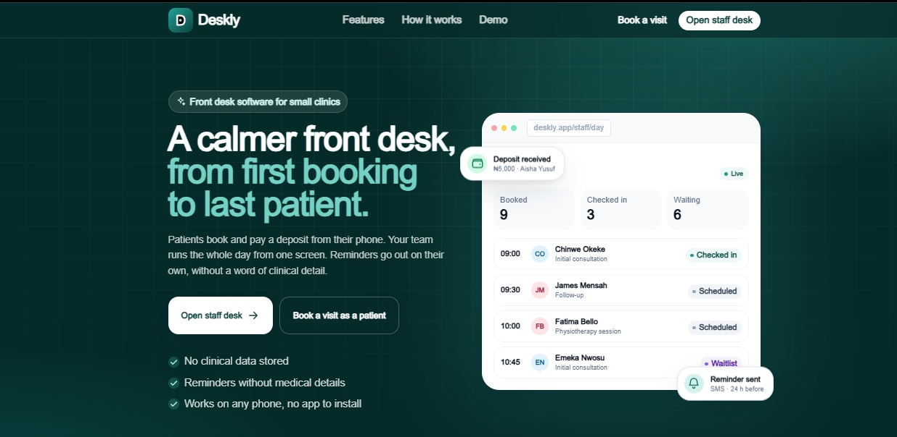

01 / 05
Deskly
Clinic operations for small private practices: booking, intake, day view, payments and reminders. Built as a realistic product demo with simulated data only.
- < 5 minBooked in a test with a nurse
System notes
- Architecture
- A Next.js app with three connected areas: clinic setup, patient booking and a staff schedule. It stores no clinical records, and payments and reminders are simulated.
- UI solution
- A seven-step setup, a mobile-first booking flow from service to confirmation, and a day and week schedule with check-in, walk-ins and payments.
- Measured
- One nurse booked an appointment in under five minutes and said it was much faster than her usual way.
Next.jsDesign system